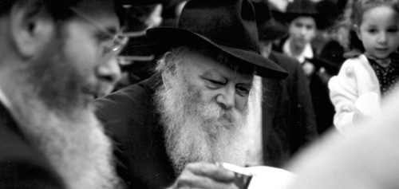

Spiritual Health Linked to Physical Health
Mr. Benny Sheetrit is a very warm and kindhearted individual, known as the local greengrocer for the Chabad community of Tzfas. When he was suffering from considerable pain and immobility in both of his legs, he arranged to have an operation at a prominent medical center. However, an answer from the
Translated by Michoel Leib Dobry

It stands to reason that there isn’t a member of the Chabad community of Tzfas who doesn’t know “Benny the greengrocer” as he is called. For many years now, Mr. Binyamin Sheetrit, owner of the “Pri V’Yerek Chabad” fruit and vegetable store, has faithfully served his hundreds of Chabad customers with tremendous joy and affection. It’s more than just a veggie store, and all the local Chabadnikim can attest to that. Benny is a person of much kindness, and he provides assistance to many needy people, quietly and without fanfare. He arranges for his customers to pay him in numerous installments. He is a Jew who shows great understanding and consideration. He has a warm and compassionate heart, and anyone can always have a pleasant chat with him.
For many long years, Benny suffered from pain in his leg joints. He had considerable difficulty walking, and every movement caused him intense physical discomfort. The cartilage between his leg bones had worn down, and he could only walk with a distinct limp. “When I saw that the situation was getting worse, and the limp became even more noticeable, I decided to do something about it. I underwent a series of x-rays at the Sieff Medical Center, and since I wanted the best orthopedic surgeons available, I arranged to have the suggested operation done at a private hospital – the Herzliya Medical Center.”
SPIRITUAL HEALTH LINKED TO PHYSICAL HEALTH
After consulting with Rabbi Ezra Sheinberg from Tzfas, Benny decided to start with an operation on his right leg. The procedure at the medical center was scheduled last month. “I brought them the x-rays of my right leg joint, and I emotionally prepared myself for the operation. Most of my customers are Chabad Chassidim, including friends with whom I share some of my most private concerns. One of them is R’ Shneur Lipsker, director of Yeshivas Chanoch Lenaar. When he heard about my upcoming operation, he immediately asked me, ‘Have you written to the Rebbe already?’ I replied that there was no longer a need to write to the Rebbe. ‘The operation has already been scheduled,’ I explained. However, R’ Shneur would not relent.
“When my wife heard about this, she too urged me to write to the Rebbe. ‘No harm can come from writing to such a tzaddik,’ she said. I was convinced.
“When R’ Shneur made his next visit to the store, he came with Vol. 16 of Igros Kodesh. He explained to me how to prepare for writing to the Rebbe. In my letter, I wrote about the entire chain of events in detail, the intense pain that had been a part of my day-to-day life, and the upcoming operation in Herzliya. The Rebbe’s answer simply amazed me. I never expected to receive such a reply. The letter appears in Vol. 16, pg. 300:
“In reply to his letter from the 23rd of Shvat, in which he writes that he has begun medical treatment with a doctor, it would be appropriate to continue the treatment, and may it be G-d’s will that it should be with success and a speedy recovery. It is surely proper to awaken him to [the fact] that the more one increases in the health of the soul, i.e., the study of the revealed and hidden teachings of the Torah and the stringent observance of mitzvos, this will also increase the health of the body, including the pain about which he writes. See also in Likkutei Torah, Parshas D’varim, Ki HaMitzva HaZos on the pasuk ‘Tamim Tihiye.’
“With a blessing for an increase in Torah study and mitzvah observance, and for good news in all the aforementioned.”
“The practical meaning of this answer was that the operation at the private hospital should be cancelled, thereby avoiding the sizable expenses that would be incurred and that I should return to the doctor who had initially examined me at the Sieff Medical Center in Tzfas. The answer was so clear that I could reach no other conclusion.
“Without a moment’s hesitation, I cancelled the appointment for the operation in Herzliya, and made an alternative appointment with Dr. David Rotem at the Sieff Medical Center in Tzfas. As I arrived at the hospital ward, he was in the middle of making his rounds. When he noticed that I was waiting for him, something totally astonishing happened that I still don’t understand to this day. He acted towards me as if we were the best of friends.
“While there was a long line of people waiting since seven in the morning, he went straight over to me and asked the receptionist to let me in first. He examined my leg and then sent me for a series of x-rays on both legs – against the advice of another doctor. He even accompanied me personally to the radiology department and gave specific orders regarding the x-rays. At the end of the day, when he checked the pictures, he told me quite plainly that my legs were not in very good condition. However, he advised me to have an operation done on my left leg first.
“I immediately consulted with Rabbi Ezra Sheinberg. Since the Rebbe’s reply had not mentioned which leg to treat, Rabbi Sheinberg said that if this was the doctor’s professional opinion, I must follow his instructions. The doctor set a date for the operation, which would obviously be done under full anesthetic. During the procedure, complications set in. While the operation was expected to take no more than two or three hours, it eventually lasted from six a.m. until two o’clock the following morning. My family was extremely anxious as the hours passed, but the doctor came out periodically to reassure them. He added that this was one of the most complex operations he had ever performed.
“When I woke up after the procedure was over, he came over to speak with me. I also asked him why the operation had taken so long. He told me that the x-rays had graphically shown that my leg had been in a very precarious condition. If I had waited much longer, no operation in the world could have solved the problem. As a result, he had to perform some tricky medical maneuvers to save my leg.
“In fact, by the second day of my post-operative recovery, I stood on both legs to the absolute amazement of everyone.
“During the doctors’ rounds that same day, Dr. Rotem came in with several members of the hospital’s medical staff, including a number of gentile doctors. One of them proceeded to ask me: How can the Jews say regarding G-d that ‘there is nothing else besides Him?’ If it hadn’t been for Dr. Rotem, he insisted, I wouldn’t have been able to walk again so soon… I decided that now was the appropriate time to tell them about the Rebbe’s answer. I explained how I had originally planned to have the operation in Herzliya, but the Rebbe had caused me to change my decision at the last minute.
“The doctors were dumbstruck. Then, Dr. Rotem asked if he could say something. He told all those present that when he was a young medical student, he had been privileged to pass by the Rebbe for dollars and to receive his blessing. I was deeply moved to hear this: A doctor receives the Rebbe’s bracha, and lo and behold, the Rebbe sends me to him for treatment.
“About a week later, when I had already returned home, I discovered that I had gone through a very delicate operation, normally requiring a most lengthy period of rehabilitation. I also eventually heard a lot more about Dr. Rotem. It turned out that this surgeon had a very unique operating approach for people suffering from my condition. He developed a special expertise in his field, which proved to be far more effective in treating this infirmity. I don’t know what would have happened if I had undergone the operation at the Herzliya Medical Center, but according to all indications and considering the serious condition of my legs, I realized that the Rebbe had sent me to the best doctor available to cure my ailment.
“When I was released from the hospital to continue my recovery at home, the doctors said that there was only one way to describe my situation – a medical miracle. They had seen a thing or two during their lives, but never anything like this!”
A NEW MAN FULL OF GRATITUDE
Benny has already returned to running his store, and his amazing story spread throughout the city. We saw him last week smiling and relaxed, after years of enduring pains in his legs that have now disappeared as if they never existed. He feels like a new man, totally refreshed, and he gives many thanks for this to the Rebbe. “Up until five years ago, my business was located in the Kiryat Chabad complex. At a certain point, I decided to move into a larger storefront on Zalman Shazar Street, but I had many concerns about the change in venue. Naturally, I asked for the Rebbe’s bracha, and the business has thrived ever since,” Benny recalled with a tone of deep satisfaction in his voice.
Menachem Ziegelboim. "Spiritual Health Linked to Physical Health." Beis Moshiach, no. 856 (November 15, 2012).